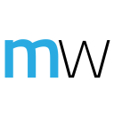

On December 12, 2013, six exceptional Startup Weekend teams will gather
in Seattle for an unparalleled regional battle. At stake are amazing
prizes and, more importantly, hometown pride. Check out the competitors
below and support your favorites!

|
LilyDrive, Seattle
|
›
|
At the intersection of web content, social media, and payments, LilyDrive
lets us "give a Lily bit" when we read or watch content on the web that
moves us. LilyDrive is both a channel to "do good" and way to view, share,
and discover the content that's the most important to us.
|

|
MyWorksheets, Seattle Edu
|
›
|
Millions of tablets are going into classrooms each year,
but most teachers don’t have the time in their busy schedules
to find all new digital lessons. With MyWorksheets app,
teachers can quickly and easily transform their existing
worksheets into digital lessons delivered on their students’
tablets. This easily adoptable platform immediately gives
classrooms access to the benefits of technology while laying
the foundation for the future of interactive digital lessons.